全臺唯一24小時院內健身房 花蓮慈院獲運動企業認證
花蓮慈濟醫院打造全臺唯一24小時免費開放的院內運動中心「壽喜燒」，醫師、護理師與行政同仁隨時都能運動。今年獲運動部「運動企業」認證，成為花蓮首家通過的醫療院所，每月使用人次更從1,500突破2,500，院方要把運動風氣從…
閱讀全文 →花蓮慈濟醫院打造全臺唯一24小時免費開放的院內運動中心「壽喜燒」，醫師、護理師與行政同仁隨時都能運動。今年獲運動部「運動企業」認證，成為花蓮首家通過的醫療院所，每月使用人次更從1,500突破2,500，院方要把運動風氣從…
閱讀全文 →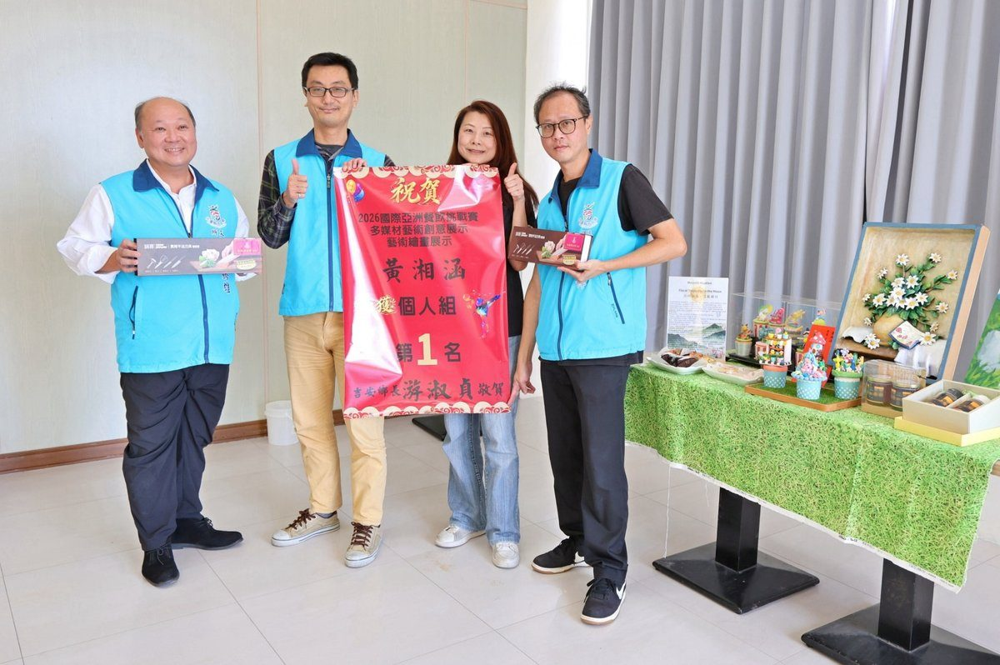
花蓮子弟黃湘涵在2026國際亞洲餐飲挑戰賽勇奪多媒材藝術創意展示與藝術會展個人組第一名，吉安鄉長游淑貞指派秘書鄒逢益前往烘焙工作室張貼紅榜祝賀，肯定她以花蓮山海景觀、在地農產與人文風情創作，把甜點與翻糖藝術推向國際舞台，…
閱讀全文 →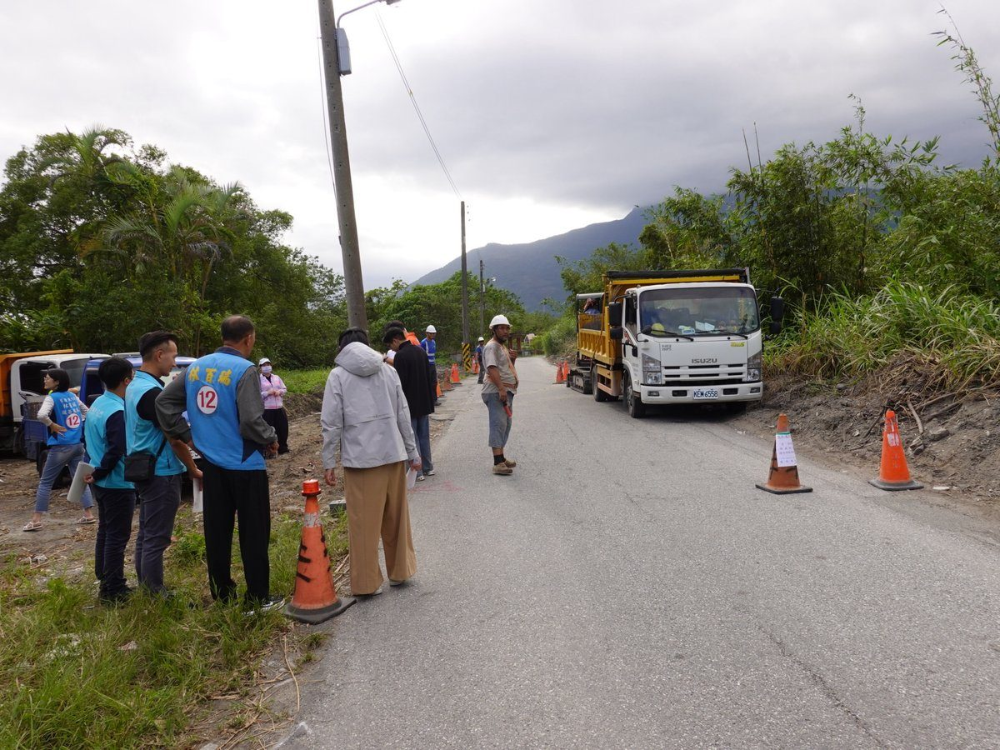
花蓮市公所自籌235萬元辦理建安街瓶頸段改善工程，改善道路狹窄、視線受阻及會車不易等問題。市長魏嘉彥今（12）日偕建設課長徐國城前往現場了解施工情形，市民代表林百瑞、游政霖也到場關心，工程預計今年12月底前完工。…
閱讀全文 →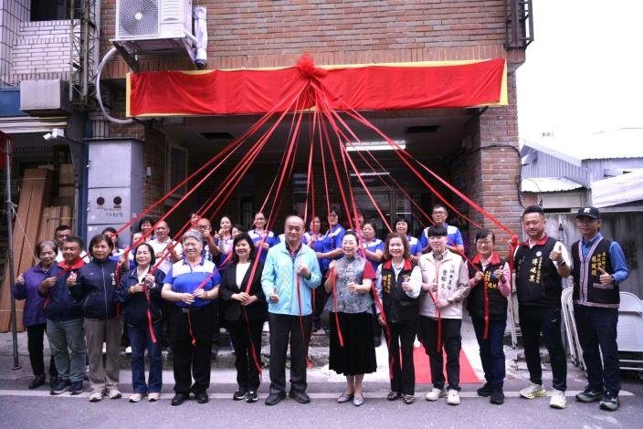
花蓮縣第六家銀髮健身俱樂部於玉里鎮國武里揭牌，縣長徐榛蔚到場主持，提供長者肌力與柔軟度訓練課程，每週二、五開課。…
閱讀全文 →第 46 期・11/13 – 11/19 本週運勢精華指南。🌌 本週星象提示：水星 11/13（五）深夜 23:53 在天蠍順行、金星 11/14（六）早上 08:27 在天秤順行，六週的逆行期正式結束；11/16（一）…
閱讀全文 →花蓮市公所舉辦鄰長座談會，民孝里反映東興路未列入大型車指定行駛路線，卻頻傳大貨車闖入且車速偏快。市公所將轉知花蓮縣警察局花蓮分局派員稽查、依法取締，並呼籲運輸業者遵守路線與時段管制。…
閱讀全文 →喝水時習慣把頭往後仰，看似平常的小動作，卻可能增加吞嚥功能不佳長輩的嗆咳風險。11月11日，花蓮慈濟醫院復健醫學部吞嚥咀嚼中心團隊走進國富社區，為長輩做吞嚥篩檢，發現不少人都有可能造成嗆咳的不當習慣，語言治療師現場提醒正…
閱讀全文 →花蓮縣116年度總預算408億9,607萬7,000元經縣議會全數通過，縣府擴大育兒、托育、青年租屋、長者健檢與敬老禮金等全齡福利，並加碼弱勢安置與住宅補助，減輕家庭負擔。…
閱讀全文 →花蓮0403、0423震災營建混合廢棄物處理計畫10月完成發包，11月起進場分類清運，全數約12萬4千公噸，預計117年完成去化，縣府同步規劃暫置場並加強揚塵與流向管制。…
閱讀全文 →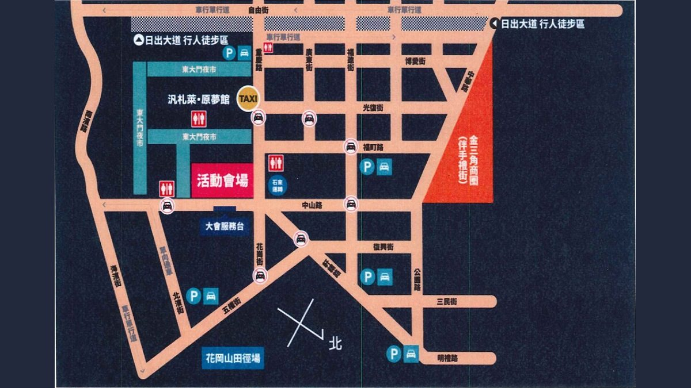
2026花蓮星潮原聲演唱會11月21日、22日在花蓮市登場，花蓮分局公告每日16時至23時管制中山路等8處路段，彈性人車管制並視狀況提前或延後解除，提醒用路人提前改道。…
閱讀全文 →吉安鄉公所全面配合花蓮縣政府持續深化社區照顧服務，積極打造宜居樂活之鄉。縣府今（11）日上午於縣立體育館舉辦「樂活花蓮 據新聚力－115年花蓮縣社區照顧關懷據點及社區長照站成果展」，吸引社區據點近500位長輩、工作人員及…
閱讀全文 →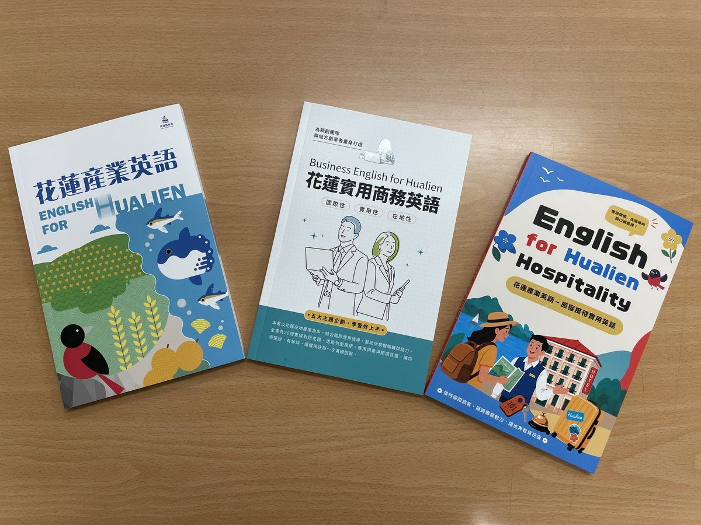
花蓮縣政府英語培力計畫邁入第三年，113年觀光英語、114年新創商務英語到115年旅宿接待實用英語，累積3班30堂課程、160頁專書、15集雙語Podcast與92句廣播英語。…
閱讀全文 →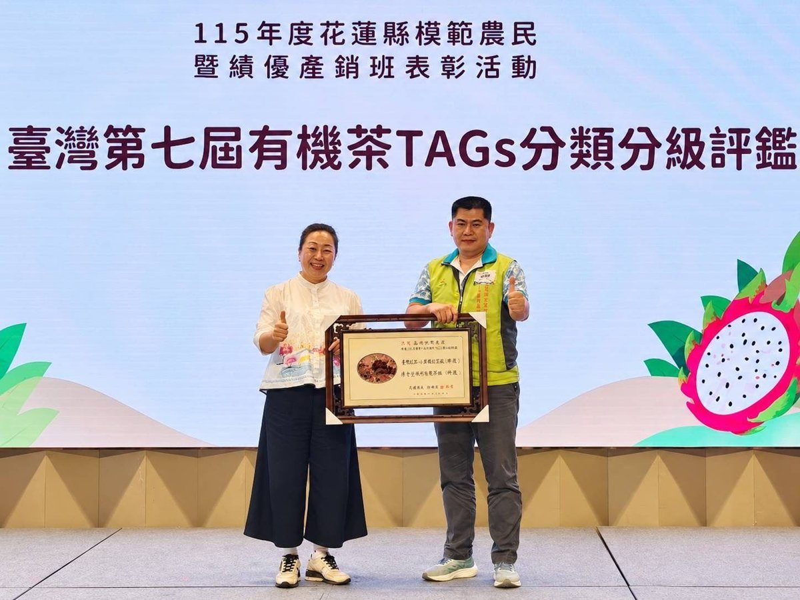
花蓮富里鄉六十石山茶農林俊傑榮獲農業部第35屆全國十大神農，以有機驗證、產銷履歷與蜜香紅茶在英國Great Taste Awards拿下三星獎與金叉獎，花蓮已連續四屆有農友獲選。…
閱讀全文 →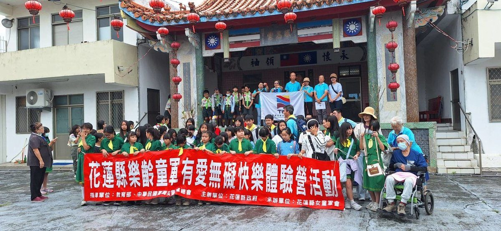
花蓮縣女童軍會11月6、7日辦理115年花蓮縣樂齡童軍有愛無礙快樂體驗營，以Free Being Me精神邀集童軍、樂齡長者與身心障礙者等共同參與，走讀空軍第五戰術混合聯隊、花蓮港、石雕博物館與大陳故事館。…
閱讀全文 →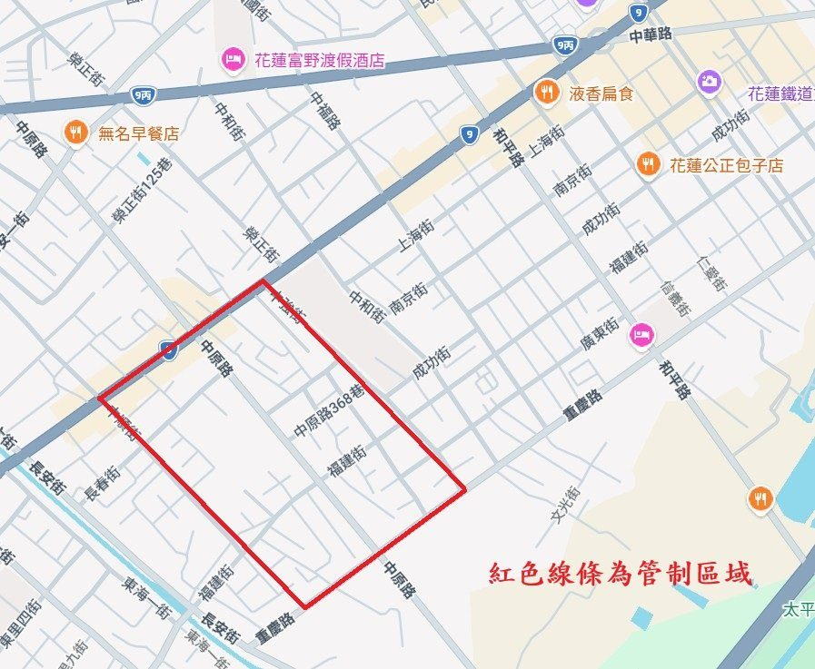
花蓮縣警察局花蓮分局公告，11月10日中午12時至下午6時於花蓮市舉辦大型集會活動，中正路、中強街、重慶路與中順街圍成街廓實施彈性人車管制，並公布例外車輛與罰則，提醒用路人提前改道。…
閱讀全文 →
天氣轉涼，鼻水狂流、鼻塞擤不出來，用力擤鼻涕小心耳朵先受傷！花蓮慈濟醫院耳鼻喉科林廉捷醫師分享正確三原則：輕輕擤、單邊擤、嘴巴微張；鼻涕濃稠時先用生理食鹽水或溫熱毛巾軟化再輕擤，避免鼻涕往耳咽管衝造成耳悶、中耳炎與流鼻血…
閱讀全文 →
花蓮縣宜昌國小六年級學生陳廣杰，在「第22屆國家地理知識大競賽」奪下地理知識組國小組金牌，展現從閱讀與生活觀察累積的扎實地理實力；花蓮市長魏嘉彥今（10）日前往宜昌國小張貼紅榜，與校長丁嘉琦共同肯定他的優異表現，也感謝師…
閱讀全文 →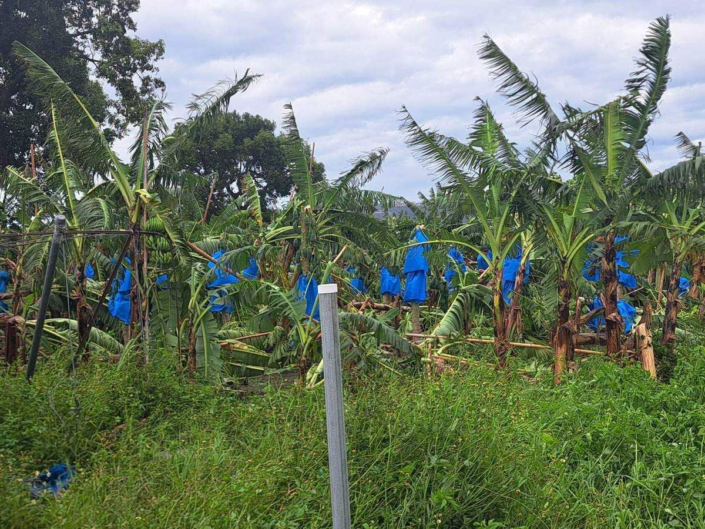
薔琵颱風過境後強風連番吹襲，吉安鄉香蕉等高莖作物受損明顯，田間植株倒伏、枝葉折損，果實套袋散落。吉安鄉公所農業課已啟動災損查報，逐筆掌握各地受災情形；這波農業天然災害現金救助受理至11月13日截止，香蕉每公頃8萬元，鄉長…
閱讀全文 →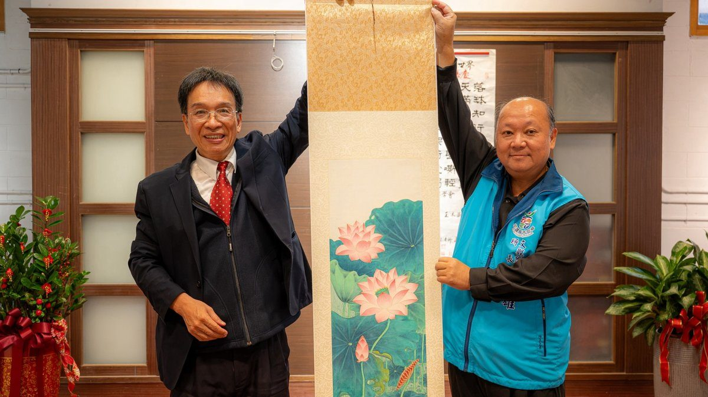
為推廣在地藝文風氣、豐富鄉親文化生活，吉安鄉公所持續透過好客藝術村打造多元藝文交流平台。即日起至11月29日，由花蓮藝術社於吉野藝文館舉辦「藝想世界・藝義非凡」聯展，集結陳進財、李微（蓮鳳）及譚睛睛三位藝術家的創作精華，…
閱讀全文 →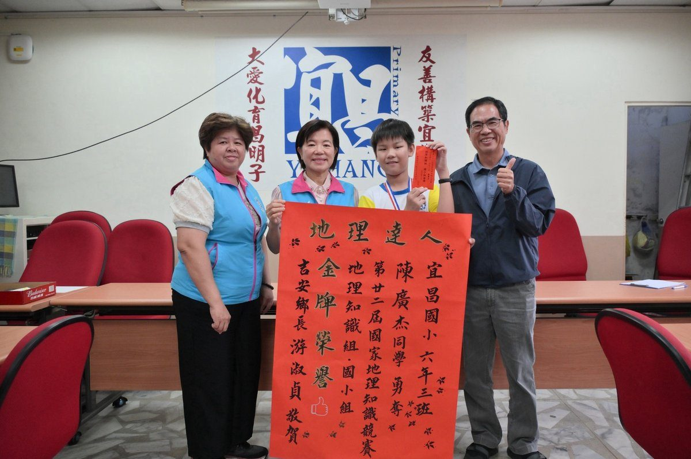
花蓮孩子才識過人，宜昌國小陳廣杰同學勇奪「第二十二屆國家地理知識競賽」地理知識組國小組全國金牌。鄉長游淑貞今（9）日前往學校張貼紅榜，親自祝賀並加油打氣。「花蓮的孩子、吉安的孩子真棒。」除肯定廣杰的優異表現，也感謝師長與…
閱讀全文 →